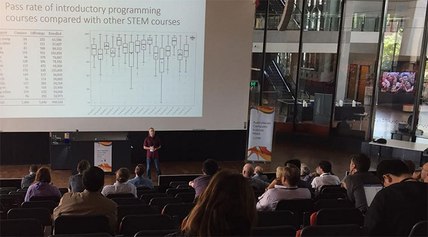

ACE 2023
25th Australasian Computing Education Conference

Reviewing timeline
Thank you for volunteering your expertise and your time to serve on the Program Committee for ACE.
Please view the reviewing deadline as an absolute limit, not an expected submission time, and try to complete your reviews well before the deadline. When reviewers leave the task to the last minute, things can go wrong (illness, work emergency, family emergency, reviewing taking longer than you anticipated), and when reviews are not completed by the deadline we are left asking for volunteers to review extra papers at very short notice.
The deadline for reviews is Friday 4th November, 2022, just a little over two weeks from when reviews were assigned to reviewers. Any reviews that are not in by then will cause great difficulties over the subsequent few days, as we are committed to sending author notifications just a week later.
Discussion among reviewers and the chairs will be possible during and immediately after the review period. To take part in such discussion, use the Add Comment box at the foot of the page showing the paper’s reviews. However, we would like all discussion, and any revision of reviews, to be completed within a few days after the end of reviewing, allowing us time to make the final decisions. Please, therefore, be ready to take active part in the discussion.
Research and practitioner papers
In the past, ACE has accepted both research papers and practice papers without distinguishing between them. Since ACE 2019, there has been a clear distinction, and reviewers are asked to review each paper according to the category in which it was submitted, using the guidelines on this page.
Practitioner papers: Practitioner papers provide the opportunity for teachers to share new educational tools, interesting teaching resources, assignments, and techniques that may be of broad interest to the community.
When reviewing a practitioner paper, you might consider questions such as these.
- Are other educators likely to want to use the material, idea, technique, etc that the paper is presenting?
- Is the paper’s subject matter presented in a way that will permit others to adopt the practice being described?
- Is the paper presenting something reasonably new to the community, rather than rehashing something that might already be standard practice?
- Do the authors provide a rich reflection on the idea/activity, and clearly present its implications to the community?
Research papers: Research papers are expected to report upon research that has been conducted in the area of computing education. In general terms, research is a process of forming hypotheses, gathering relevant data, analysing the data, and considering the results in the light of the hypotheses. While this generality does not necessarily fit every research paper, it is a reasonable starting point when assessing whether a paper does actually present research, as opposed to, say, a report on a classroom experience or a proposal to conduct future research.
It is not always possible to unambiguously categorise a paper as research or practice. In particular, many papers describe an innovation or intervention at length, then hypothesise that students will like the change, and conduct a survey to test the hypothesis. Such papers could be argued to satisfy the general description given above; but if it is clear to the reader that the point of the paper is to present the innovation or intervention, and the survey appears just to play a supporting role, this would suggest that the paper is a practitioner paper with a survey rather than a research paper.
When reviewing a research paper, you might consider questions such as these.
- Is the work well motivated (i.e. is there a clearly stated problem being addressed?) and are there clearly stated research questions in the early part of the paper?
- Is there a clear description of prior relevant work in computing education, and a clear description of how the work being presented extends that work?
- What data was gathered? From what participants? How? Do the authors make the case that the data is sufficient to address their questions?
- What analysis was applied to the data? Do the authors explain why they applied this particular analysis, and describe it clearly enough to permit replication?
- Are the findings described clearly and related back to the research questions? Are you, as a reader, persuaded that the data and analysis lead to the findings and the conclusions?
- Do the authors acknowledge and describe any threats to the validity of their work?
- Does the paper make clear how the findings are expected to benefit the computing education community?
Reviewing a paper
It is seldom enough to write a sentence or two and then recommend acceptance or rejection. On reading the text of a review, the authors should understand why the reviewer felt that the paper should be accepted or rejected. A good review will be reasonably thorough, clearly outlining the paper’s strengths and weaknesses. Wherever possible, it will include suggestions for improvement. All but the very best of papers still have some room for improvement, and all but the very worst of papers have some kernel of promise that the authors might be able to grow into a worthwhile paper.
ACE does not have a review-revise-review cycle, so papers should be marked as accept if they are currently acceptable, not if they have the potential to become acceptable after substantial revision. In particular, there is no such thing as a conditional accept. If a paper is not suitable for acceptance subject to minor revisions, it should be rejected.
Be sure that your overall recommendation tallies with your impression of the paper. If you do not believe that the paper should be accepted, please do not rate it as acceptable just to be nice, or to err on the side of generosity. It is more helpful to the program chairs and the authors if your review is honest and transparent and your overall recommendation reflects your impression.
Most papers have some flaws in their writing. The reviewers are not required to be editors, pointing out every flaw that requires correction. However, some reviewers choose to do this, and many authors appear to appreciate the additional service.
It is a good idea for reviews to be grammatically correct – especially if they criticise the grammar of the paper. Just as a poorly written paper gives the reader a poor first impression, a poorly written review can make the authors less inclined to accept its content. Please read your own reviews carefully, and, if necessary, submit revised versions with the spelling and grammar errors corrected.
Do not let a paper’s format be the deciding factor in a recommendation that it be rejected. If it seems to you that a paper does not conform with the template, feel free to point this out. If you are in any doubt, leave it to the chairs to settle matters of formatting.
The EasyChair conference link is: https://easychair.org/conferences/?conf=ace23